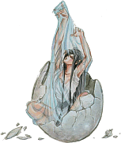

Volver
al Índice
Volver
al ÍndiceEL PINTOR APELES
Apeles era un pintor griego, protegido de Alejandro Magno, de quien Plinio el Viejo relata una anécdota en su Historia Natural.
Y dice así: Apeles, deseoso de saber lo que la gente opinaba de su obras, las expuso en la plaza de la ciudad y luego se escondió detrás de uno de sus lienzos para oír lo que la gente decía.
Llegó un zapatero y, observando uno de los cuadros, criticó la forma en que Apeles había pintado las sandalias de un soldado.
Cuando Apeles lo oyó, salió de su escondite, le pareció razonable lo que el censor le decía y rectificó el detalle.
Entonces el zapatero se envalentonó y empezó a criticar otros aspectos del cuadro. Apeles muy enfadado increpó al zapatero, y dijo una frase que Plinio traduce al latín: Ne sutor ultra crepidam iudicaret, que traducido al castellano quiere decir: "Zapatero a tus zapatos"
Este antiguo dicho recuerda, que no conviene ocuparse de cosas que se desconocen, que es de necios emprender trabajos o empresas para los que no se esta preparado.